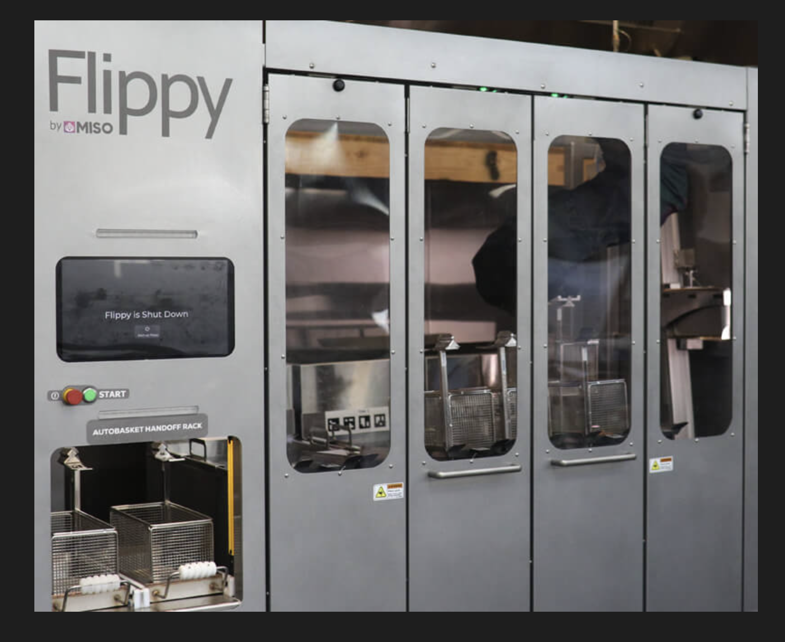
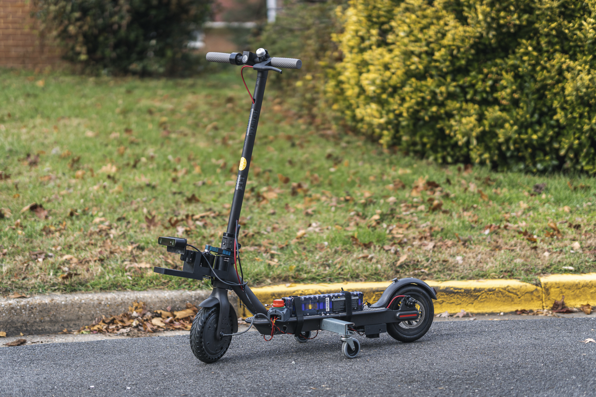
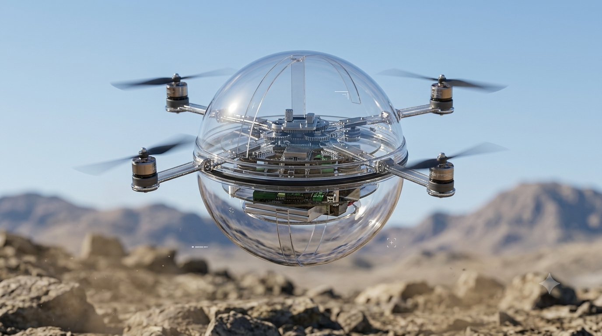
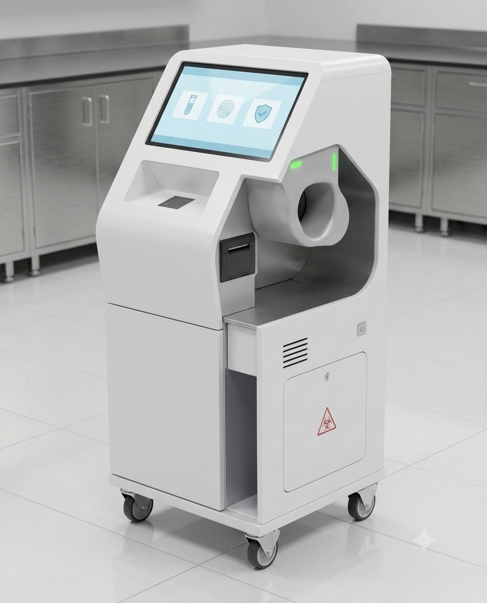
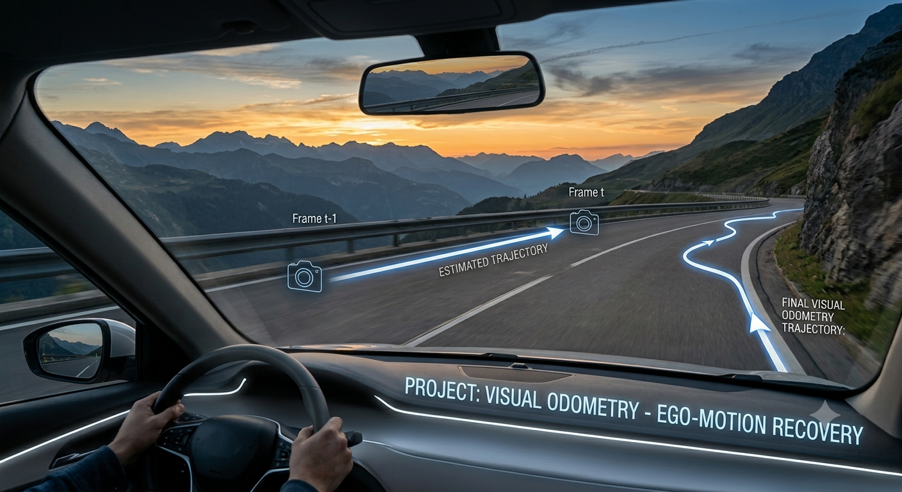
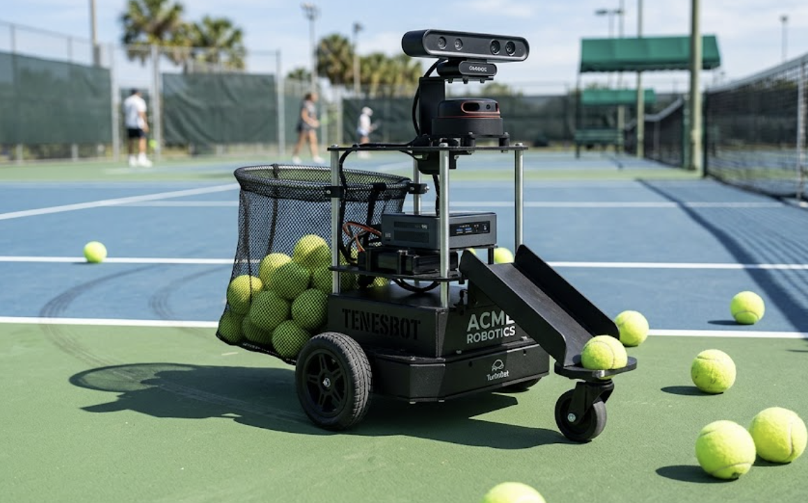
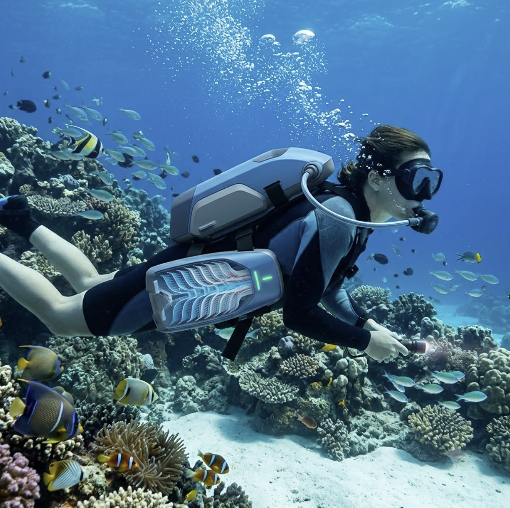
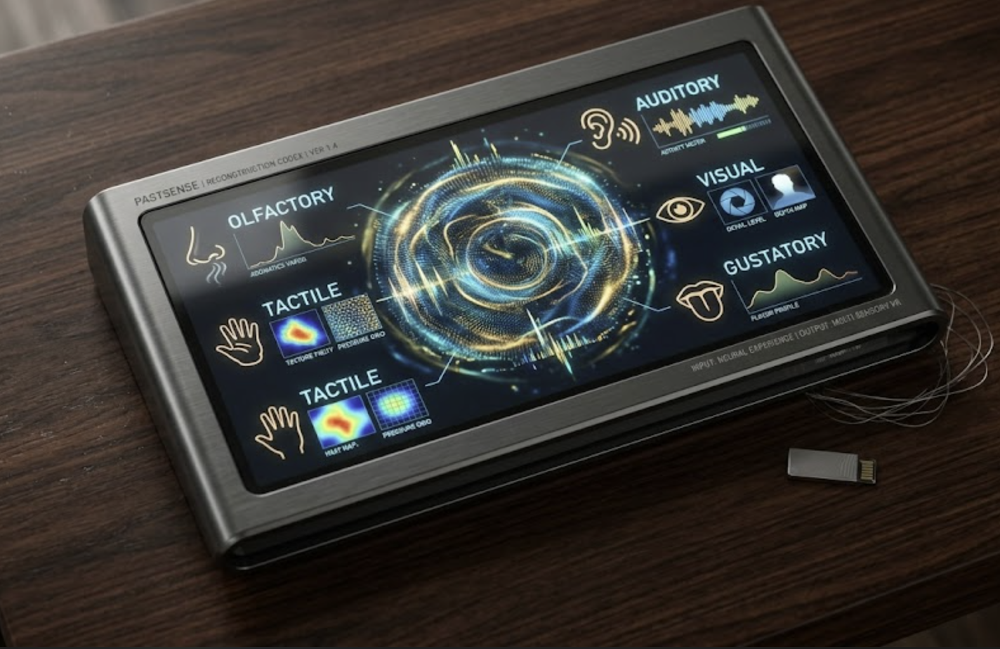

Release engineering and test infrastructure for robots that ship.
I'm a senior software engineer leading release engineering at FieldAI, building the pipeline and test infrastructure that gets autonomous systems into the field reliably. Below is some of what I've built, broken, and fixed along the way.








Stack
Sized by how often they show up in an actual work week: the big ones are why I get hired.
· · · /experience · · ·
Work
Aug 2026 – Present
Current
FieldAI
Senior Software Engineer, Release Engineering & Test Infrastructure
Aug 2026 – Present
Leading release engineering from the ground up: building the release pipeline, CI/CD, and test infrastructure that will take the function from zero to a repeatable, auditable process.
Jul 2021 – Aug 2026
~5 yrs
Miso Robotics Inc.
Pasadena, CA
Principal Systems Engineer
Apr 2026 – Aug 2026
Owned the systems engineering roadmap: org-wide requirements management, V&V planning, and release readiness aligned to the SDLC V-model, and represented systems engineering in executive and stakeholder reviews.
Lead Systems Engineer
Jan 2025 – Mar 2026
Led EVT/DVT/PVT for Flippy 3 across mechanical, electrical, firmware, and software readiness gates; authored 200+ requirements and 15+ ICDs at 95% verification coverage; built automated test infrastructure that cut testing time 40%.
Systems Engineer
Jul 2021 – Dec 2024
Architected the Flippy 3 functional safety system to Performance Level D under ISO 10218, built HITL validation infrastructure, integrated the Yaskawa GP4 manipulator, and ran RCA/CAPA that cut fleet downtime 20%.
Jan 2020 – May 2021
~1.3 yrs
Rezoom Lab, University of Maryland
College Park, MD
Graduate Robotics Researcher / Entrepreneurial Lead
Developed an autonomous ROS stack for an e-scooter (component spec, software interfaces, digital twin, SIL testing) with EKF-based multi-sensor fusion for sub-meter positioning, then led an NSF I-Corps effort through 120+ customer interviews to secure $50,000+ in grants.
Total experience ~5 years in systems, release engineering & robotics.
Senior Software Engineer, FieldAI
I build the release engineering and test infrastructure function: the pipelines, gates, and automated test suites that decide whether a build is safe to ship. It's the layer where most of the interesting failures get caught before they reach the field.
Before FieldAI, I spent ~5 years at Miso Robotics doing systems engineering for Flippy 3: requirements, interfaces, functional safety, and verification & validation. Before that, the autonomy stack for an electric scooter at the University of Maryland and a multi-domain surveillance robot for DRDO. Outside of work, I still read failure-mode analyses for fun.
What I do
Requirements & architecture
Authoring the requirements and interface contracts that let mechanical, electrical, firmware, and software teams build the same system without building against each other.
Verification & validation
Turning "does it work" into a plan: hardware-in-the-loop rigs, automated test suites, and staged fleet validation before anything reaches production.
Functional safety
Hazard analysis and risk assessment that holds up to certification, most recently achieving Performance Level d under ISO 10218.
Patents & Publications
Development of Underwater Breathing System using Counter Flow Diffusion
Development of a tankless mask for underwater breathing.
Show publication →Air Water and Land Surveillance Bot (Patent Pending)
Nominated by the Indian Defense Research Organization as part of the Unmanned System Exposition for designing a surveillance robot in the first round, advancing to the defense lab round. Other inventors credited.
NSF I-Corps™ National Team Badge
Awarded on completion of the NSF I-Corps National Team program for customer discovery and venture formation work on the autonomous e-scooter project at the University of Maryland.
Show badge →Automated Food Frying System
An automated food frying system with an enclosure defining a robotic workspace, a robotic arm, and functional stations for dispensing raw food to a bin, transferring it to a fry basket, frying it, and transferring cooked food to a receiving pan. Optionally includes an auto-drawer station to move a fry basket between operator and robotic arm without either penetrating the enclosure.
Show patent →Recommendations
I had the privilege of working with Pruthvi Sanghavi at Miso Robotics for over three years, during which I promoted him twice and ultimately had him reporting directly to me. Throughout that time, he consistently distinguished himself as one of the strongest engineers and technical leaders I have worked with in my career.
What sets Pruthvi apart is his rare combination of deep technical expertise, systems thinking, and leadership. He has an exceptional ability to operate at every level of a complex robotics organization, from defining high-level engineering strategy and driving executive decision-making to solving highly technical challenges involving robotics, software, hardware integration, machine learning, and functional safety.
Over the years, Pruthvi played a pivotal role in the development and commercialization of the Flippy 3 robotic platform. As Lead Systems Engineer, he successfully guided the program through EVT, DVT, and PVT phases, coordinating cross-functional teams across mechanical, electrical, firmware, and software disciplines to bring a highly sophisticated robotic product from prototype to production. His ability to align teams, manage risk, and drive execution was instrumental to the success of the program.
Beyond program execution, he demonstrated exceptional technical rigor in systems engineering. He established requirements management processes, authored critical interface definitions, maintained verification traceability across complex subsystems, and developed automated validation frameworks that significantly accelerated testing while improving product quality. His work consistently raised the engineering bar for the entire organization.
One of the qualities I admire most is his relentless focus on solving real customer problems. He regularly analyzed field performance data, identified root causes of operational issues, and drove corrective actions that measurably improved fleet reliability, customer satisfaction, and overall system performance. Whether operating in the lab, reviewing architecture, analyzing production data, or coordinating cross-functional teams, he continually demonstrated ownership and accountability well beyond the scope of his role.
As he progressed into leadership positions, he became a trusted technical go to person. He was effective communicating and collaborating with engineering teams, and mentoring fellow engineers.
Simply put, he is the type of engineer every technology company hopes to hire: intellectually curious, technically exceptional, highly dependable, and deeply committed to team success. His contributions had a lasting impact on Miso Robotics, and I have no doubt he will continue to excel and lead wherever his career takes him. I recommend him without reservation and would welcome the opportunity to work with him again in the future.
Bachir Kharraja
CTO, Miso Robotics · managed Pruthvi directly
I had the opportunity to work closely with Pruthvi at Miso Robotics, where he was a key engineering partner in supporting our Flippy fleet for many years.
What I appreciated most about Pruthvi was his willingness to jump into real-world problems and help the Operations team find solutions. He brought a strong systems perspective to troubleshooting complex issues in the field and was someone we could rely on when problems crossed the boundaries between hardware, software, and operations.
Pruthvi also looked for ways to make support smarter and more scalable. He built AI tools to help our teams troubleshoot and support the fleet more effectively, applying new technology to very practical operational challenges.
He's a talented engineer, a thoughtful problem solver, and a great cross-functional partner. I'm grateful for the years we worked together and would gladly recommend Pruthvi to any team looking for someone who can combine strong technical depth with an understanding of how robotics systems actually perform in the real world.
Maira Rodriguez
Director of Operations, Miso Robotics · senior to Pruthvi
Right now: building the release engineering function at FieldAI from the ground up: release pipelines, CI/CD, and test infrastructure.